清单创建及管理
清单的类型
- 智能清单：滴答清单的默认清单，如【今天】【明天】【最近七天】【收集箱】等；
注：【今天】【明天】【最近七天】智能清单中，会显示到期日分别为今天、明天和最近七天的任务；注：【收集箱】是一个临时存储盒，不可被删除，用于存储所有没有被分配到特定清单的任务；注：【分配给我】是收集来自不同的共享清单中分配给你的任务，你可以在这个清单中查看你在不同团队中的任务。 - 普通清单：用户所创建的清单，如【生活】【工作】【会议】等；
注：免费账户的普通清单，限制为 9 个。 - 自定义智能清单：用户通过筛选所创建的智能清单。
管理智能清单
当清单栏列表中清单过多时，你可以选择将部分不常用的清单隐藏。
点击左上角头像-【设置】-【智能清单】，可以对智能清单的状态进行设置。
- 显示：该清单始终显示在清单栏；
- 自动：当清单中有任务时，该清单显示在清单栏，清单中没有任务时，该清单不显示；
- 隐藏：该清单始终不显示在侧边栏。
注：【收集箱】不能被隐藏。
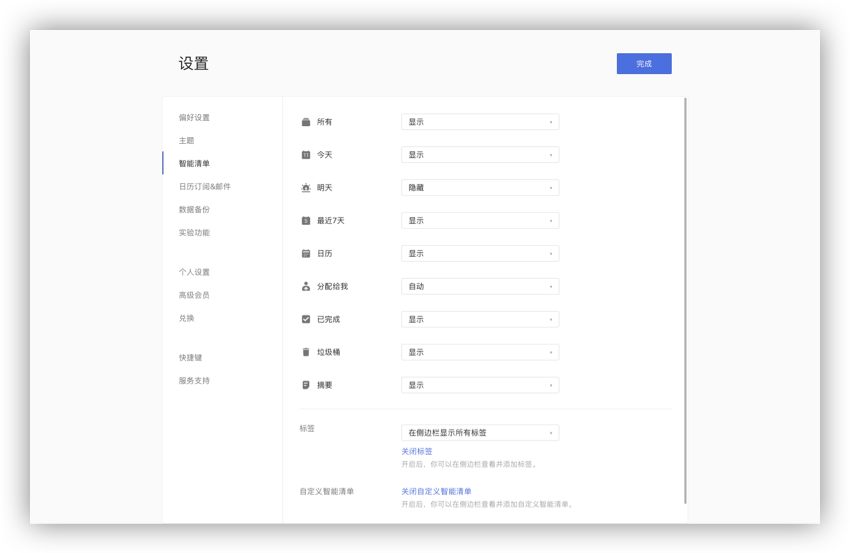
拖动智能清单: 可以在智能清单区域，拖动智能清单改变智能清单的排序。
自定义智能清单
在【设置】-【智能清单】中开启【自定义智能清单】，在左侧边栏的【清单】和【标签】旁边会出现【自定义】。
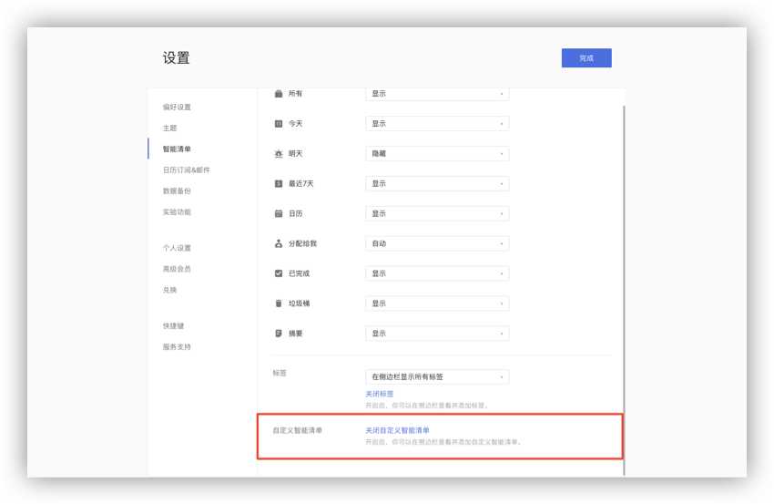
点击【添加智能清单】，即可创建一个新的自定义智能清单。
可以使用【清单】【日期】【优先级】【标签】【分配给】五个条件来筛选智能清单中的任务。 注：当前没有带标签的任务时，【标签】筛选项不显示； 注：当前没有共享清单时，【分配给】筛选项不显示。
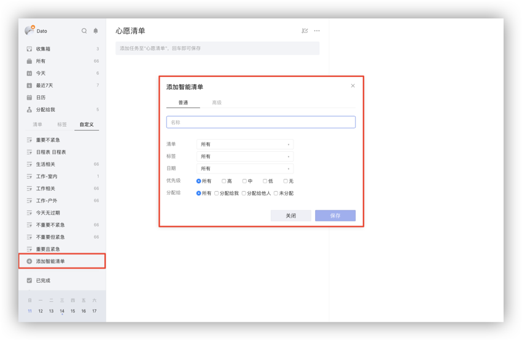
点击自定义智能清单右侧的「···」可以对智能清单进行编辑和删除。 注：自定义智能清单为高级账户功能。
创建普通清单
点击页面左侧边栏的【添加清单】按钮，在弹窗中输入清单名称，设置颜色，清单所属文件夹以及是否隐藏，即可创建一个清单。 新的清单建立好后，在清单内创建的任务会默认属于该清单。
注：开启【隐藏】开关，该清单中的任务将不会在智能清单中显示，但任务到期时依然会提醒。 注：免费账户的普通清单，限制为 9 个。
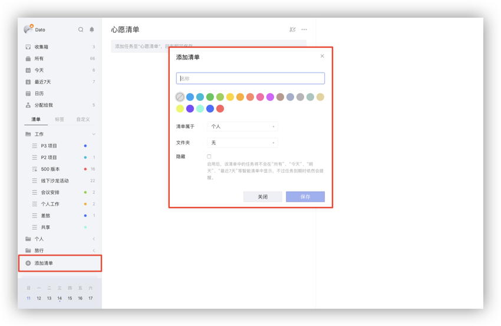
文件夹
随着清单列表越来越长，需要经常拉动左侧边栏以查看具体清单，这个时候可以使用文件夹来整理你的清单列表。
- 创建文件夹：长按住一个清单拖动到另一个清单至重叠，松开后可以创建一个新的清单文件夹，输入文件夹名字即可。或者通过清单添加或编辑弹窗中的文件夹来创建新的文件夹。
注：可以直接拖动清单到文件夹，也可以拖动清单移出文件夹。
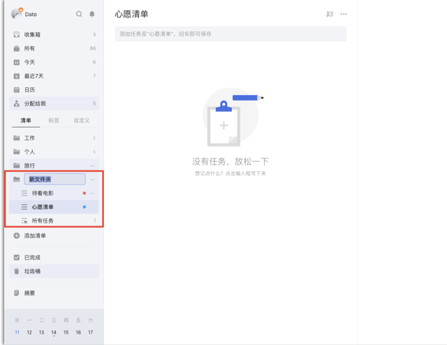
- 重命名：在侧边栏中，单击文件名旁的「···」，选择重命名，修改文件夹的名字。
- 解散文件夹：在侧边栏中，单击文件名旁的「···」，选择解散文件夹，文件夹中的清单不会被删除，将独立出来显示在侧边栏。
- 文件夹总览：添加和编辑文件夹时，可以选择是否启用文件夹总览。启用后，当文件夹中的清单达到两个及以上时，文件夹下会出现【所有任务】清单。在这个清单里可以查看文件夹内所有任务，默认按清单排序，你也可以更改它的排序方式，按到期时间、标题或优先级排序。
注：文件夹总览默认开启。关闭文件夹总览后，即使文件夹中的清单达到两个，也不会显示【所有任务】清单。 - 适用场景：清单文件夹能够帮助你更好的管理清单。例如，购物文件夹中可以整理出超市购物清单、商场购物单、网购清单等；读书文件夹可以分出小说清单、学习书单等。将相同类型或者是同一项目的清单放在一个文件夹中，会让你的清单列表更加整洁有条理。
管理普通清单
单击清单名旁的「···」,可以对清单进行【编辑】【共享】【复制】【关闭】【删除】的操作。
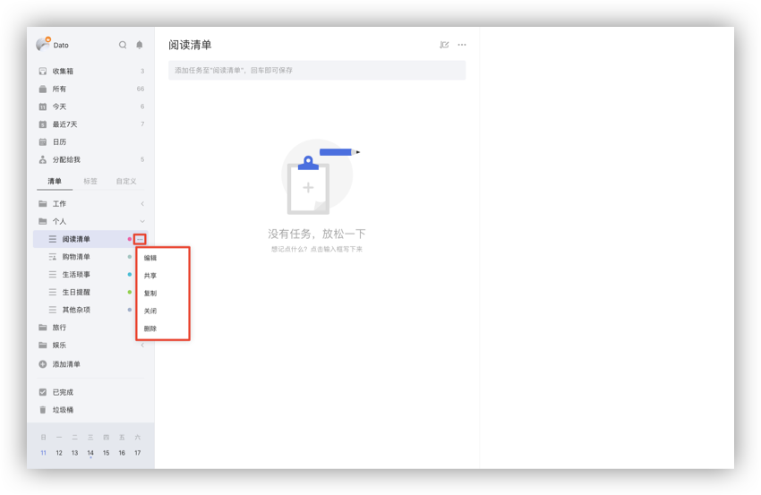
编辑清单
单击【编辑】,可以改变清单名称,选择颜色,或者选择是否隐藏该清单。 注：隐藏后，该清单的任务将不会出现在【所有】【今天】【最近七天】等智能清单中，但到期仍会提醒。
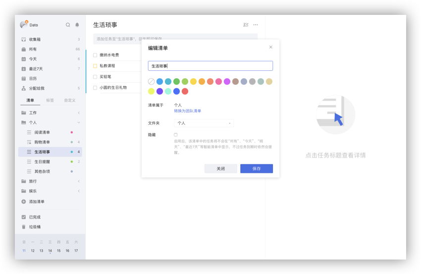
共享清单
单击【共享】,或点击任务界面上方的「···」图标选择【共享】，支持邮箱邀请和共享链接两种方式：
- 输入受邀请人的电子邮件地址；
- 创建分享链接并发送给好友。
共享清单中的任务可以指派给参与共享的成员。 点击该条任务，点击右侧任务详情页右上角的【指派】按钮，即可选择成员。 更多共享与协作 注：普通账户一个清单只能邀请1位共享成员，高级账户可以邀请18位共享成员。一条任务只可指派给一个成员。
复制清单
点击【复制】，创建选中清单的副本，副本会复制原清单内的所有任务，已完成的任务和子任务都会变成未完成状态，任务列表排序，任务内容、日期、优先级、附件和原清单一致。 注：不复制原清单的评论和隐藏状态，共享清单复制后的副本是普通清单。
关闭清单
单击【关闭】，可以关闭清单，关闭清单中的任务不会再提醒。 注：关闭的清单可以在已关闭的清单中重新开启。
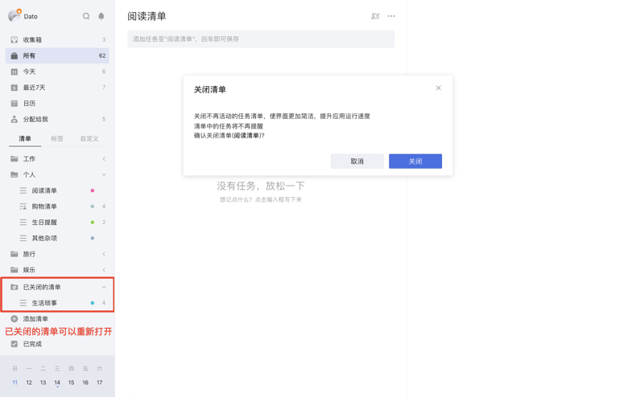
删除清单
点击【删除】，将会删除该清单及清单下的任务。
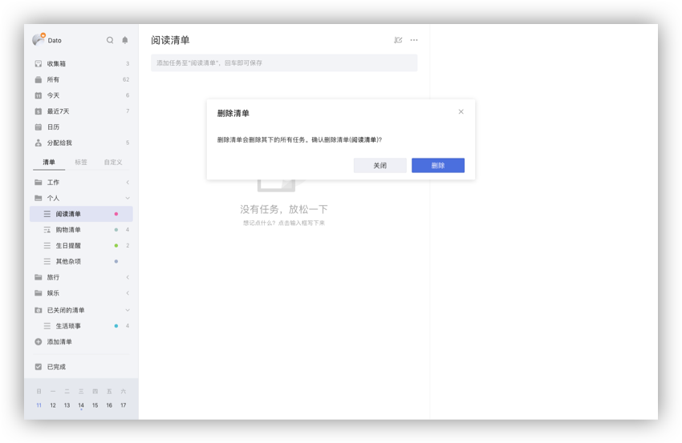
清单排序
智能清单、普通清单和自定义智能清单可以直接拖动，在左侧边栏进行排序。
清单动态
选择一个清单，点击任务界面上方的「···」图标，选择【清单动态】，可以在右侧看见清单中任务的动态。添加、删除、移动、完成/反完成任务。
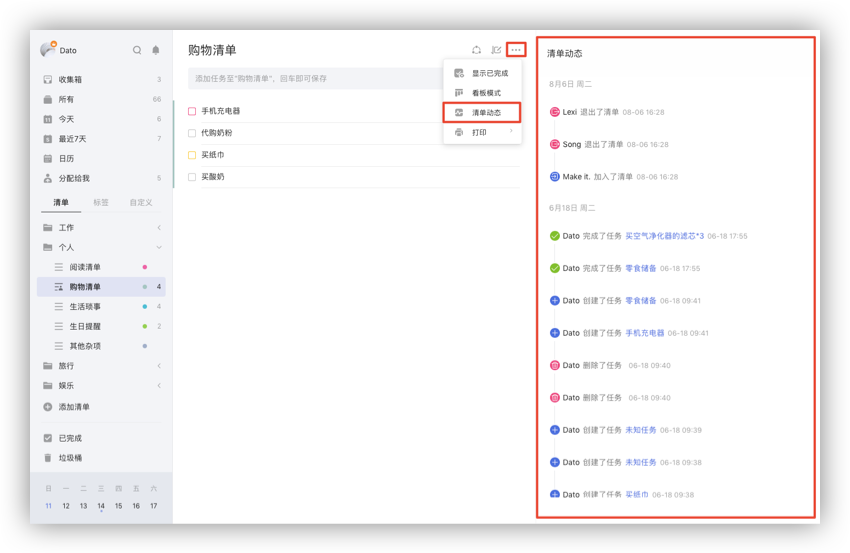
打印清单
选择一个清单，点击任务界面上方的「···」图标，选择【打印】，可以选择打印标题还是标题和内容。在打印之前,将有一个打印预览,可以设置纸张大小,边距等。
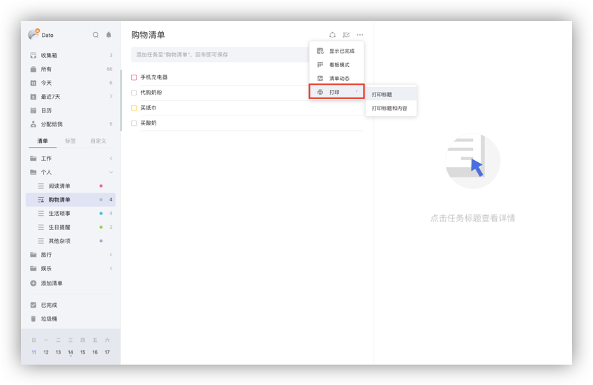